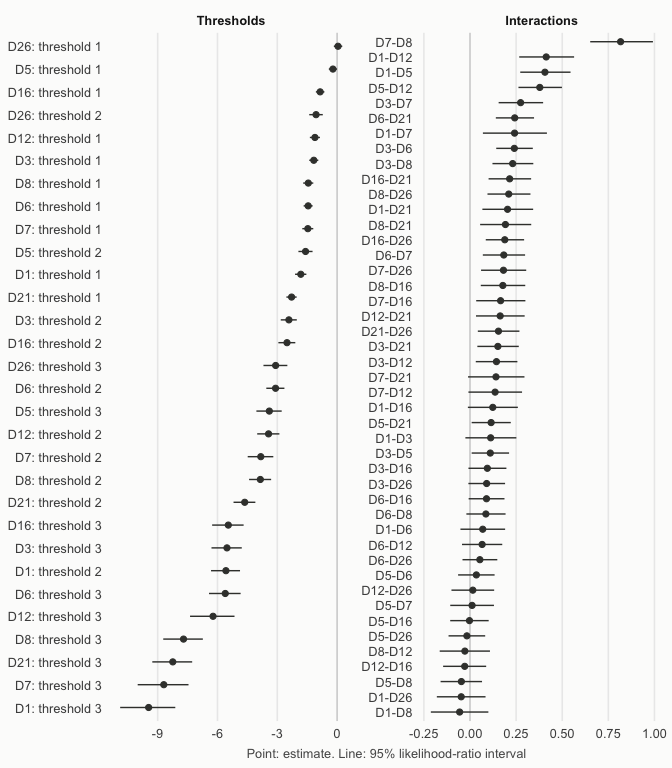
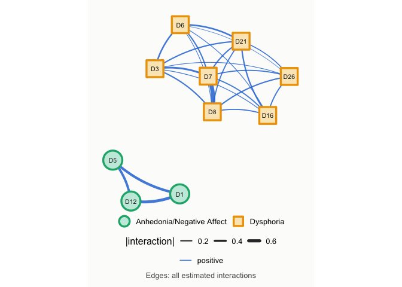
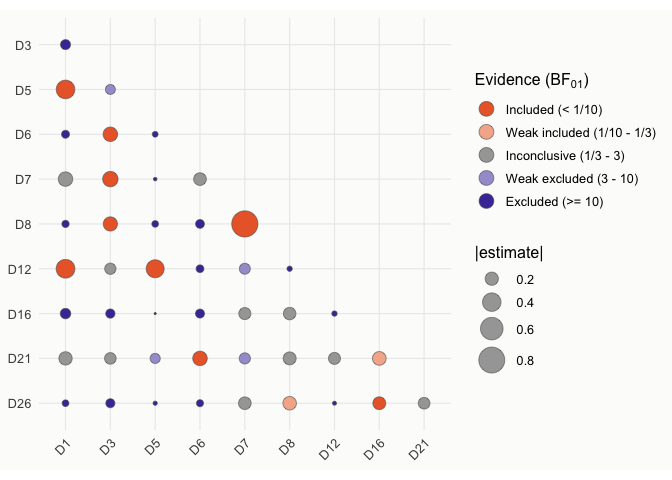
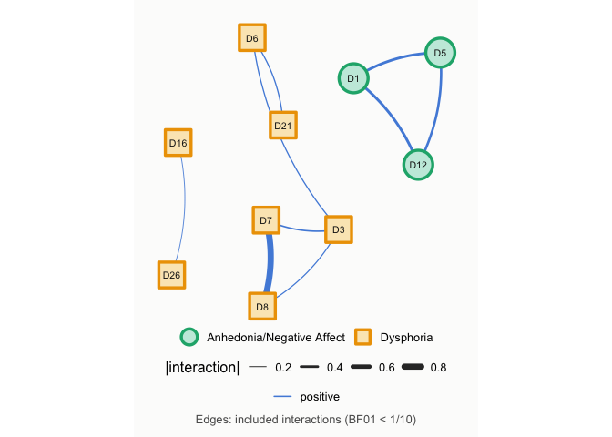
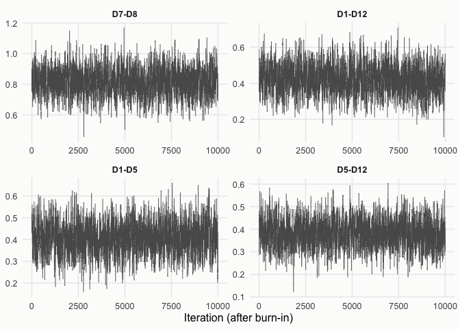
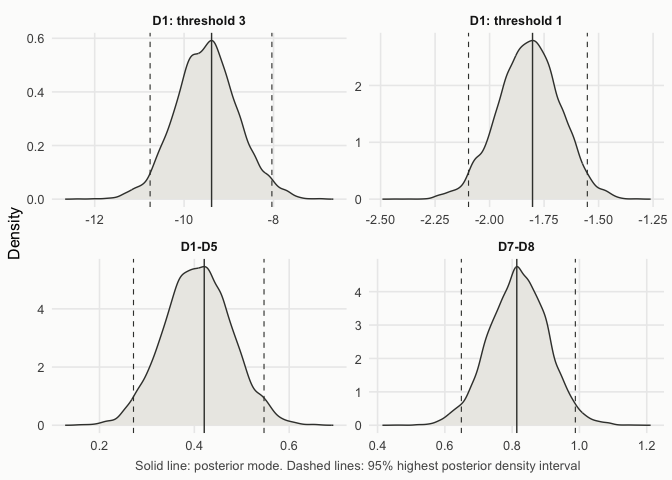
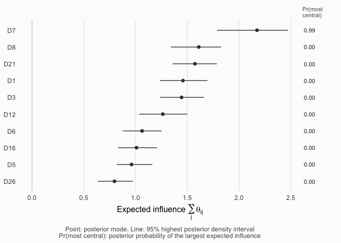

This vignette illustrates a complete network analysis with
dmrfit. It covers point estimation with confidence
intervals, the evidence for each edge, Bayesian estimation, centrality,
and the choice between the sampling methods. Each section first
describes how to run the analysis and interpret its output. The
paragraphs titled Details explain the methods and can be
skipped on a first reading. The notation follows Arena and Marsman
(2026).
A discrete Markov random field models the conditional dependencies between discrete random variables, such as the items of a questionnaire, as a network: two variables are connected when they are dependent given all the other variables. Let denote the observed data for observations on ordinal variables, where each variable takes one of the categories , and let denote the -th observation. The ordinal Markov random field (OMRF) is defined by the parameter vector , which comprises the threshold parameters , the tendency of variable to take the non-baseline category that is not explained by its interactions with the other variables, and the interaction parameters , the pairwise conditional dependency between variables and . An interaction means that variables and are conditionally independent, that is, there is no edge between them. When the variables are binary, the OMRF reduces to the Ising model.
The full likelihood of the OMRF contains a normalizing constant that
sums over all
possible response patterns, which is infeasible beyond a few variables.
dmrfit uses the pseudo-likelihood instead, the product of
the conditional distributions of each variable given the remaining
variables,
with
,
whose normalizing constants are computationally tractable. Combined with
a prior
,
it defines the pseudo-posterior
.
The pseudo-likelihood estimates are consistent, but the curvature of the
pseudo-likelihood overstates the information in the data: used naively,
it underestimates the variability of the estimates and the posterior
variance. The package corrects this underestimation in two ways.
dmrfit() estimates the parameters by maximizing the
pseudo-likelihood (or the pseudo-posterior), with robust standard
errors, confidence intervals and Bayes factors for the edges.dmrfit_bayes() samples from the pseudo-posterior
rescaled to the scale of the full posterior (coordinate rescaling, CoRe,
Arena and Marsman, 2026).rads2 contains the responses of 917 adolescents from
Lima (Peru) to the 25 items of the four-factor version of the Reynolds
Adolescent Depression Scale (RADS-2), each answered on a four-point
scale (Ramos-Vera et al., 2023). The positively worded items were
reverse-coded, so that higher values mean more symptoms for every item.
The items belong to four clusters, stored with the data. Here we use the
10 items of two clusters, dysphoria and anhedonia/negative affect, with
variables,
categories and
observations.
data(rads2)
clusters <- attr(rads2, "clusters")
items <- names(clusters)[clusters %in% c("Dysphoria", "Anhedonia/Negative Affect")]
X <- rads2[, items]
clusters[items]
#> D1 D3
#> "Anhedonia/Negative Affect" "Dysphoria"
#> D5 D6
#> "Anhedonia/Negative Affect" "Dysphoria"
#> D7 D8
#> "Dysphoria" "Dysphoria"
#> D12 D16
#> "Anhedonia/Negative Affect" "Dysphoria"
#> D21 D26
#> "Dysphoria" "Dysphoria"The response frequencies show that the highest category is rarely chosen for some items. This matters below, because a threshold of a rare category is estimated from few observations.
dmrfit() estimates the thresholds and interactions. With
with_prior = TRUE it maximizes the pseudo-posterior, which
gives the maximum a posteriori (MAP) estimate, with beta-prime priors on
the exponentiated thresholds,
,
and Cauchy priors on the interactions,
. Without the prior
it gives the maximum pseudo-likelihood estimate (MPLE).
lrt_intervals = TRUE adds likelihood-ratio intervals for
all parameters, and savage_dickey = TRUE the Bayes factors
of the next section.
fit <- dmrfit(X, with_prior = TRUE, savage_dickey = TRUE, lrt_intervals = TRUE)In the output, mu[i,h] is the threshold
and theta[i,j] the interaction
,
with the variables numbered in the column order of the data.
summary() prints the estimates with their standard errors,
and the Wald and likelihood-ratio intervals next to each other.
summary(fit)
#>
#> Call:
#> dmrfit(data = X, with_prior = TRUE, savage_dickey = TRUE, lrt_intervals = TRUE)
#>
#> Discrete Markov Random Field
#> Estimation method: maximum pseudo-likelihood (with prior)
#> Nodes: 10 Observations: 917 Free parameters: 75
#> Standard errors: Godambe-Huber-White (GHW) estimator
#> ------------------------------------------------------------
#>
#> Thresholds:
#> Post.Mode Post.SD z value Pr(>|z|)
#> mu[1,1] -1.820877 0.144418 -12.6084 < 2.2e-16
#> mu[1,2] -5.576649 0.370759 -15.0412 < 2.2e-16
#> mu[1,3] -9.452950 0.705495 -13.3990 < 2.2e-16
#> mu[2,1] -1.169270 0.115919 -10.0870 < 2.2e-16
#> mu[2,2] -2.417688 0.205029 -11.7920 < 2.2e-16
#> mu[2,3] -5.524127 0.387496 -14.2560 < 2.2e-16
#> mu[3,1] -0.209862 0.105177 -1.9953 0.04601
#> mu[3,2] -1.582957 0.180676 -8.7613 < 2.2e-16
#> mu[3,3] -3.399964 0.323605 -10.5065 < 2.2e-16
#> mu[4,1] -1.451465 0.114853 -12.6376 < 2.2e-16
#> mu[4,2] -3.087075 0.231522 -13.3338 < 2.2e-16
#> mu[4,3] -5.610251 0.404348 -13.8748 < 2.2e-16
#> mu[5,1] -1.468367 0.140364 -10.4611 < 2.2e-16
#> mu[5,2] -3.827827 0.327542 -11.6865 < 2.2e-16
#> mu[5,3] -8.693257 0.650305 -13.3680 < 2.2e-16
#> mu[6,1] -1.445533 0.129159 -11.1918 < 2.2e-16
#> mu[6,2] -3.850868 0.282119 -13.6498 < 2.2e-16
#> mu[6,3] -7.703633 0.506745 -15.2022 < 2.2e-16
#> mu[7,1] -1.112222 0.128882 -8.6298 < 2.2e-16
#> mu[7,2] -3.438122 0.283897 -12.1105 < 2.2e-16
#> mu[7,3] -6.222909 0.568813 -10.9402 < 2.2e-16
#> mu[8,1] -0.850789 0.108832 -7.8175 5.389e-15
#> mu[8,2] -2.513389 0.216437 -11.6125 < 2.2e-16
#> mu[8,3] -5.457662 0.402758 -13.5507 < 2.2e-16
#> mu[9,1] -2.282995 0.131021 -17.4247 < 2.2e-16
#> mu[9,2] -4.633978 0.279444 -16.5829 < 2.2e-16
#> mu[9,3] -8.242312 0.510441 -16.1474 < 2.2e-16
#> mu[10,1] 0.045836 0.107724 0.4255 0.67048
#> mu[10,2] -1.056172 0.173051 -6.1032 1.039e-09
#> mu[10,3] -3.082789 0.305565 -10.0888 < 2.2e-16
#>
#> Pairwise interactions:
#> Post.Mode Post.SD z value Pr(>|z|)
#> theta[2,1] 0.1121620 0.0703940 1.5933 0.1110827
#> theta[3,1] 0.4062825 0.0694625 5.8490 4.947e-09 ***
#> theta[4,1] 0.0689947 0.0617306 1.1177 0.2637062
#> theta[5,1] 0.2416338 0.0884372 2.7323 0.0062900 **
#> theta[6,1] -0.0561661 0.0794795 -0.7067 0.4797695
#> theta[7,1] 0.4131106 0.0758050 5.4496 5.047e-08 ***
#> theta[8,1] 0.1234728 0.0690276 1.7887 0.0736560 .
#> theta[9,1] 0.2035943 0.0701258 2.9033 0.0036929 **
#> theta[10,1] -0.0476660 0.0672855 -0.7084 0.4786879
#> theta[3,2] 0.1099157 0.0517141 2.1255 0.0335490 *
#> theta[4,2] 0.2402308 0.0504967 4.7574 1.961e-06 ***
#> theta[5,2] 0.2744462 0.0614688 4.4648 8.014e-06 ***
#> theta[6,2] 0.2313118 0.0564412 4.0983 4.162e-05 ***
#> theta[7,2] 0.1433946 0.0575102 2.4934 0.0126535 *
#> theta[8,2] 0.0939737 0.0524526 1.7916 0.0731982 .
#> theta[9,2] 0.1510427 0.0572081 2.6402 0.0082850 **
#> theta[10,2] 0.0902188 0.0507052 1.7793 0.0751938 .
#> theta[4,3] 0.0343960 0.0504221 0.6822 0.4951364
#> theta[5,3] 0.0113068 0.0603851 0.1872 0.8514689
#> theta[6,3] -0.0468243 0.0572661 -0.8177 0.4135508
#> theta[7,3] 0.3783185 0.0600302 6.3021 2.936e-10 ***
#> theta[8,3] -0.0029214 0.0531458 -0.0550 0.9561629
#> theta[9,3] 0.1144986 0.0540580 2.1181 0.0341691 *
#> theta[10,3] -0.0168471 0.0506416 -0.3327 0.7393810
#> theta[5,4] 0.1831356 0.0584058 3.1356 0.0017152 **
#> theta[6,4] 0.0861031 0.0541438 1.5903 0.1117747
#> theta[7,4] 0.0657230 0.0555872 1.1823 0.2370703
#> theta[8,4] 0.0894205 0.0495450 1.8048 0.0711011 .
#> theta[9,4] 0.2424225 0.0527873 4.5924 4.381e-06 ***
#> theta[10,4] 0.0534099 0.0480940 1.1105 0.2667697
#> theta[6,5] 0.8163969 0.0866513 9.4216 < 2.2e-16 ***
#> theta[7,5] 0.1360569 0.0740861 1.8365 0.0662881 .
#> theta[8,5] 0.1658596 0.0679567 2.4407 0.0146602 *
#> theta[9,5] 0.1407857 0.0779097 1.8070 0.0707566 .
#> theta[10,5] 0.1813855 0.0623835 2.9076 0.0036423 **
#> theta[7,6] -0.0278154 0.0694366 -0.4006 0.6887246
#> theta[8,6] 0.1779921 0.0614563 2.8962 0.0037766 **
#> theta[9,6] 0.1920124 0.0705658 2.7210 0.0065076 **
#> theta[10,6] 0.2100408 0.0593717 3.5377 0.0004036 ***
#> theta[8,7] -0.0286764 0.0594765 -0.4821 0.6297012
#> theta[9,7] 0.1635554 0.0672080 2.4336 0.0149508 *
#> theta[10,7] 0.0152829 0.0590018 0.2590 0.7956162
#> theta[9,8] 0.2149666 0.0587718 3.6576 0.0002545 ***
#> theta[10,8] 0.1885638 0.0529913 3.5584 0.0003731 ***
#> theta[10,9] 0.1542764 0.0574723 2.6844 0.0072668 **
#> ---
#> Signif. codes: 0 '***' 0.001 '**' 0.01 '*' 0.05 '.' 0.1 ' ' 1
#>
#> Intervals (95%): Wald (GHW standard errors) and likelihood-ratio
#> Wald lower Wald upper LRT lower LRT upper
#> mu[1,1] -2.1039 -1.5378 -2.1084 -1.5420
#> mu[1,2] -6.3033 -4.8500 -6.3232 -4.8697
#> mu[1,3] -10.8357 -8.0702 -10.8810 -8.1158
#> mu[2,1] -1.3965 -0.9421 -1.3976 -0.9430
#> mu[2,2] -2.8195 -2.0158 -2.8260 -2.0219
#> mu[2,3] -6.2836 -4.7646 -6.3009 -4.7818
#> mu[3,1] -0.4160 -0.0037 -0.4156 -0.0031
#> mu[3,2] -1.9371 -1.2288 -1.9406 -1.2319
#> mu[3,3] -4.0342 -2.7657 -4.0485 -2.7794
#> mu[4,1] -1.6766 -1.2264 -1.6787 -1.2282
#> mu[4,2] -3.5409 -2.6333 -3.5508 -2.6428
#> mu[4,3] -6.4028 -4.8177 -6.4247 -4.8395
#> mu[5,1] -1.7435 -1.1933 -1.7456 -1.1951
#> mu[5,2] -4.4698 -3.1859 -4.4842 -3.1999
#> mu[5,3] -9.9678 -7.4187 -10.0023 -7.4533
#> mu[6,1] -1.6987 -1.1924 -1.7008 -1.1943
#> mu[6,2] -4.4038 -3.2979 -4.4153 -3.3092
#> mu[6,3] -8.6968 -6.7104 -8.7206 -6.7343
#> mu[7,1] -1.3648 -0.8596 -1.3668 -0.8614
#> mu[7,2] -3.9945 -2.8817 -4.0077 -2.8943
#> mu[7,3] -7.3378 -5.1081 -7.3762 -5.1463
#> mu[8,1] -1.0641 -0.6375 -1.0649 -0.6381
#> mu[8,2] -2.9376 -2.0892 -2.9453 -2.0964
#> mu[8,3] -6.2471 -4.6683 -6.2679 -4.6889
#> mu[9,1] -2.5398 -2.0262 -2.5436 -2.0298
#> mu[9,2] -5.1817 -4.0863 -5.1954 -4.0999
#> mu[9,3] -9.2428 -7.2419 -9.2697 -7.2691
#> mu[10,1] -0.1653 0.2570 -0.1640 0.2585
#> mu[10,2] -1.3953 -0.7170 -1.3974 -0.7186
#> mu[10,3] -3.6817 -2.4839 -3.6938 -2.4955
#> theta[2,1] -0.0258 0.2501 -0.0250 0.2512
#> theta[3,1] 0.2701 0.5424 0.2724 0.5450
#> theta[4,1] -0.0520 0.1900 -0.0518 0.1904
#> theta[5,1] 0.0683 0.4150 0.0699 0.4170
#> theta[6,1] -0.2119 0.0996 -0.2123 0.0996
#> theta[7,1] 0.2645 0.5617 0.2668 0.5644
#> theta[8,1] -0.0118 0.2588 -0.0116 0.2594
#> theta[9,1] 0.0662 0.3410 0.0671 0.3424
#> theta[10,1] -0.1795 0.0842 -0.1798 0.0842
#> theta[3,2] 0.0086 0.2113 0.0089 0.2119
#> theta[4,2] 0.1413 0.3392 0.1423 0.3404
#> theta[5,2] 0.1540 0.3949 0.1553 0.3964
#> theta[6,2] 0.1207 0.3419 0.1218 0.3432
#> theta[7,2] 0.0307 0.2561 0.0313 0.2570
#> theta[8,2] -0.0088 0.1968 -0.0085 0.1973
#> theta[9,2] 0.0389 0.2632 0.0399 0.2644
#> theta[10,2] -0.0092 0.1896 -0.0088 0.1901
#> theta[4,3] -0.0644 0.1332 -0.0645 0.1333
#> theta[5,3] -0.1070 0.1297 -0.1071 0.1298
#> theta[6,3] -0.1591 0.0654 -0.1595 0.0652
#> theta[7,3] 0.2607 0.4960 0.2627 0.4983
#> theta[8,3] -0.1071 0.1012 -0.1073 0.1012
#> theta[9,3] 0.0085 0.2205 0.0089 0.2211
#> theta[10,3] -0.1161 0.0824 -0.1164 0.0824
#> theta[5,4] 0.0687 0.2976 0.0695 0.2987
#> theta[6,4] -0.0200 0.1922 -0.0196 0.1928
#> theta[7,4] -0.0432 0.1747 -0.0433 0.1749
#> theta[8,4] -0.0077 0.1865 -0.0075 0.1870
#> theta[9,4] 0.1390 0.3459 0.1400 0.3472
#> theta[10,4] -0.0409 0.1477 -0.0407 0.1480
#> theta[6,5] 0.6466 0.9862 0.6517 0.9917
#> theta[7,5] -0.0091 0.2813 -0.0086 0.2822
#> theta[8,5] 0.0327 0.2991 0.0336 0.3003
#> theta[9,5] -0.0119 0.2935 -0.0106 0.2952
#> theta[10,5] 0.0591 0.3037 0.0600 0.3048
#> theta[7,6] -0.1639 0.1083 -0.1643 0.1082
#> theta[8,6] 0.0575 0.2984 0.0584 0.2996
#> theta[9,6] 0.0537 0.3303 0.0549 0.3319
#> theta[10,6] 0.0937 0.3264 0.0947 0.3277
#> theta[8,7] -0.1452 0.0879 -0.1457 0.0877
#> theta[9,7] 0.0318 0.2953 0.0324 0.2963
#> theta[10,7] -0.1004 0.1309 -0.1005 0.1310
#> theta[9,8] 0.0998 0.3302 0.1007 0.3314
#> theta[10,8] 0.0847 0.2924 0.0855 0.2934
#> theta[10,9] 0.0416 0.2669 0.0424 0.2680
#>
#> Negative log pseudo-likelihood: 9654.417
#>
#> Savage-Dickey density ratio [prior: Cauchy( 0 , 2.5 )]
#> H0: theta = 0 for each pairwise interaction
#>
#> Estimate SE BF_01 Pr(=0|x)
#> theta[2,1] 0.1122 0.0704 12.35 0.9251
#> theta[3,1] 0.4063 0.0695 < 0.0001 < 0.0001
#> theta[4,1] 0.0690 0.0617 24.28 0.9604
#> theta[5,1] 0.2416 0.0884 0.8117 0.448
#> theta[6,1] -0.0562 0.0795 29.92 0.9677
#> theta[7,1] 0.4131 0.0758 < 0.0001 < 0.0001
#> theta[8,1] 0.1235 0.0690 10.83 0.9155
#> theta[9,1] 0.2036 0.0701 1.132 0.5309
#> theta[10,1] -0.0477 0.0673 30.68 0.9684
#> theta[3,2] 0.1099 0.0517 9.208 0.902
#> theta[4,2] 0.2402 0.0505 < 0.0001 < 0.0001
#> theta[5,2] 0.2744 0.0615 < 0.0001 < 0.0001
#> theta[6,2] 0.2313 0.0564 < 0.0001 < 0.0001
#> theta[7,2] 0.1434 0.0575 1.512 0.602
#> theta[8,2] 0.0940 0.0525 12.54 0.9261
#> theta[9,2] 0.1510 0.0572 1.667 0.625
#> theta[10,2] 0.0902 0.0507 15.88 0.9408
#> theta[4,3] 0.0344 0.0504 51 0.9808
#> theta[5,3] 0.0113 0.0604 58.36 0.9832
#> theta[6,3] -0.0468 0.0573 38.94 0.975
#> theta[7,3] 0.3783 0.0600 < 0.0001 < 0.0001
#> theta[8,3] -0.0029 0.0531 61.41 0.984
#> theta[9,3] 0.1145 0.0541 6.342 0.8638
#> theta[10,3] -0.0168 0.0506 60.07 0.9836
#> theta[5,4] 0.1831 0.0584 0.6128 0.3799
#> theta[6,4] 0.0861 0.0541 21.56 0.9557
#> theta[7,4] 0.0657 0.0556 26.24 0.9633
#> theta[8,4] 0.0894 0.0495 8.474 0.8944
#> theta[9,4] 0.2424 0.0528 < 0.0001 < 0.0001
#> theta[10,4] 0.0534 0.0481 41.02 0.9762
#> theta[6,5] 0.8164 0.0867 < 0.0001 < 0.0001
#> theta[7,5] 0.1361 0.0741 10.09 0.9098
#> theta[8,5] 0.1659 0.0680 1.655 0.6233
#> theta[9,5] 0.1408 0.0779 9.86 0.9079
#> theta[10,5] 0.1814 0.0624 1.816 0.6448
#> theta[7,6] -0.0278 0.0694 46.33 0.9789
#> theta[8,6] 0.1780 0.0615 0.809 0.4472
#> theta[9,6] 0.1920 0.0706 1.017 0.5041
#> theta[10,6] 0.2100 0.0594 < 0.0001 < 0.0001
#> theta[8,7] -0.0287 0.0595 42.37 0.9769
#> theta[9,7] 0.1636 0.0672 1.834 0.6471
#> theta[10,7] 0.0153 0.0590 45.56 0.9785
#> theta[9,8] 0.2150 0.0588 0.05081 0.04836
#> theta[10,8] 0.1886 0.0530 < 0.0001 < 0.0001
#> theta[10,9] 0.1543 0.0575 1.487 0.5979
#>
#> '<': zero lies beyond all resampled draws, so BF_01 is only bounded (very strong evidence for an interaction).
#>
#> SIR samples: 1000 Effective sample size of the importance sample: 2648.7 (of 10000 proposal draws)The two kinds of intervals agree for most parameters, but not for the thresholds of the rarely chosen highest categories. For item D1, whose highest category was chosen 26 times, the likelihood-ratio interval of extends further below the estimate than above it, which the symmetric Wald interval cannot do:
confint(fit, parm = c("mu[1,3]", "theta[2,1]"))
#> 2.5 % 97.5 %
#> mu[1,3] -10.88102304 -8.1158110
#> theta[2,1] -0.02504397 0.2512157
confint(fit, parm = c("mu[1,3]", "theta[2,1]"), method = "wald")
#> 2.5 % 97.5 %
#> mu[1,3] -10.83569524 -8.0702043
#> theta[2,1] -0.02580772 0.2501316plot(fit, type = "intervals") shows the estimates and
intervals of all parameters, the thresholds and the interactions in
separate panels, each sorted by estimate.
plot(fit, type = "intervals")
plot of chunk intervals
When the sample is small relative to the number of parameters and the
likelihood-ratio intervals are not computed, dmrfit() warns
that the Wald intervals may be inaccurate:
fit_small <- dmrfit(X[1:200, ])
#> Warning in dmrfit(X[1:200, ]): The sample size (200) is small relative to the
#> number of free parameters (75): the Wald intervals assume a symmetric sampling
#> distribution and may be inaccurate. Likelihood-ratio intervals are suggested:
#> refit with lrt_intervals = TRUE (or a vector of parameter names).Details. The standard errors come from the Godambe-Huber-White (GHW, or sandwich) covariance where is the Hessian of the log pseudo-likelihood and the variance of the score, both evaluated at the estimate . The naive covariance would underestimate the variability. The likelihood-ratio interval of a parameter is based on its profile: for every value of , the other parameters are set to the values that maximize the pseudo-likelihood. Because it is computed from a pseudo-likelihood, the profile likelihood-ratio statistic is not -distributed but -distributed, with (Geys, Molenberghs and Ryan, 1999; Pace, Salvan and Sartori, 2011). The interval collects the values of for which with the quantile of the distribution at the level of the interval. When a prior is used, the pseudo-posterior takes the place of the pseudo-likelihood, and is computed from its curvature , with the Hessian of the log prior, and from the posterior GHW covariance . The interval follows the shape of the pseudo-likelihood, so it can be asymmetric, and in large samples it agrees with the Wald interval.
A network structure can also be imposed with structure,
a matrix with 1 for the edges to estimate and 0 for the edges fixed at
zero. For instance, without edges between the two clusters:
S <- outer(clusters[items], clusters[items], "==") * 1
diag(S) <- 0
fit_within <- dmrfit(X, structure = S, with_prior = TRUE)
plot(fit_within, all_edges = TRUE, groups = clusters[items])
plot of chunk network-within
An interaction estimated close to zero does not tell whether the edge is absent or the data are not informative enough to tell. The Savage-Dickey Bayes factor (denoted in Arena and Marsman, 2026) compares the hypothesis of conditional independence, , with the hypothesis : is evidence for conditional independence (no edge), and evidence for an interaction. The plots classify the evidence for each edge as
| Evidence | |
|---|---|
| included | |
| to | weak included |
| to | inconclusive |
| to | weak excluded |
| excluded |
evidence <- table(cut(fit$savage_dickey$bf_01, c(0, 1/10, 1/3, 3, 10, Inf), right = FALSE,
labels = c("included", "weak included", "inconclusive", "weak excluded", "excluded")))
evidence
#>
#> included weak included inconclusive weak excluded excluded
#> 11 0 11 4 19Of the 45 possible edges, 11 are included and 19 excluded, and the
data leave 11 inconclusive. plot(fit, type = "bf") shows
the evidence for every edge, with the size of the circle given by the
size of the interaction, and the network plot draws the included
edges.
plot(fit, type = "bf")
plot of chunk bf-network
plot(fit, groups = clusters[items])
plot of chunk bf-network
Details. The Savage-Dickey Bayes factor is the ratio of the
marginal posterior and the prior density of the interaction at zero,
.
dmrfit() estimates the posterior density from draws of the
coordinate-rescaled pseudo-posterior (see the next section), obtained by
sampling importance resampling (Skare et al., 2003). When zero lies
beyond all draws of an interaction (10 interactions here), the density
at zero cannot be estimated. The Bayes factor is then set at the floor
,
with
the number of resampled draws, a bound that indicates very strong
evidence for an interaction, and summary() marks it with
<.
dmrfit_bayes() samples from the posterior of the
parameters. By default, it samples the coordinate-rescaled
pseudo-posterior, which has the location of the pseudo-posterior and the
scale of the GHW covariance.
fit_bayes <- dmrfit_bayes(X, nsim = 10000, burnin = 1000, progress = FALSE)We first assess the convergence and mixing of the chain. The trace plot shows the draws of the interactions with the largest absolute posterior modes, which should fluctuate around a stable level, without trends. The effective sample sizes (ESS) summarize the mixing.
plot(fit_bayes, type = "trace")
plot of chunk trace
min(fit_bayes$savage_dickey$ess) # smallest effective sample size of a parameter
#> [1] 741.6517
fit_bayes$mess # multivariate effective sample size of all draws
#> [1] 2006.834The posterior densities show the posterior mode (solid line) and the 95% highest posterior density interval (dashed lines), the shortest interval that contains 95% of the posterior.

plot of chunk density
summary() reports the posterior summaries and the Bayes
factors computed from the draws, and confint() the highest
posterior density intervals. The Bayes factors from the draws and from
dmrfit() agree closely: they classify 87% of the edges in
the same evidence class.
summary(fit_bayes)
#>
#> Call:
#> dmrfit_bayes(data = X, nsim = 10000, burnin = 1000, progress = FALSE)
#>
#> Discrete Markov Random Field
#> Estimation method: Bayesian (FisherMALA), coordinate-rescaled pseudo-posterior (Godambe-Huber-White covariance)
#> Nodes: 10 Observations: 917 Parameters: 75
#> MCMC samples: 10000 Acceptance rate: 0.579 Elapsed: 5.5 sec
#> Multivariate effective sample size: 2006.8
#> ------------------------------------------------------------
#>
#> Thresholds:
#> Post.Mode Post.Mean Post.SD 2.5% 97.5%
#> mu[1,1] -1.8209 -1.8195 0.1413 -2.0957 -1.5488
#> mu[1,2] -5.5766 -5.5764 0.3624 -6.2736 -4.8548
#> mu[1,3] -9.4529 -9.4953 0.6911 -10.8322 -8.0860
#> mu[2,1] -1.1693 -1.1648 0.1157 -1.3961 -0.9486
#> mu[2,2] -2.4177 -2.4062 0.2061 -2.8224 -1.9958
#> mu[2,3] -5.5241 -5.5083 0.3879 -6.2669 -4.7586
#> mu[3,1] -0.2099 -0.2078 0.1063 -0.4132 -0.0033
#> mu[3,2] -1.5830 -1.5719 0.1842 -1.9278 -1.2050
#> mu[3,3] -3.4000 -3.3915 0.3237 -4.0296 -2.7634
#> mu[4,1] -1.4515 -1.4448 0.1178 -1.6742 -1.2167
#> mu[4,2] -3.0871 -3.0676 0.2371 -3.5437 -2.6209
#> mu[4,3] -5.6103 -5.5944 0.4105 -6.4140 -4.8052
#> mu[5,1] -1.4684 -1.4695 0.1430 -1.7454 -1.1861
#> mu[5,2] -3.8278 -3.8291 0.3309 -4.4680 -3.1688
#> mu[5,3] -8.6933 -8.6951 0.6522 -9.9747 -7.4016
#> mu[6,1] -1.4455 -1.4365 0.1340 -1.6989 -1.1778
#> mu[6,2] -3.8509 -3.8328 0.2891 -4.3973 -3.2692
#> mu[6,3] -7.7036 -7.6765 0.5182 -8.6959 -6.6631
#> mu[7,1] -1.1122 -1.1050 0.1290 -1.3637 -0.8641
#> mu[7,2] -3.4381 -3.4370 0.2822 -3.9856 -2.8854
#> mu[7,3] -6.2229 -6.2466 0.5712 -7.3548 -5.1115
#> mu[8,1] -0.8508 -0.8460 0.1077 -1.0579 -0.6352
#> mu[8,2] -2.5134 -2.4993 0.2163 -2.9321 -2.0811
#> mu[8,3] -5.4577 -5.4531 0.4114 -6.2679 -4.6529
#> mu[9,1] -2.2830 -2.2898 0.1317 -2.5436 -2.0331
#> mu[9,2] -4.6340 -4.6481 0.2760 -5.1841 -4.0957
#> mu[9,3] -8.2423 -8.2867 0.5058 -9.2708 -7.2805
#> mu[10,1] 0.0458 0.0569 0.1069 -0.1518 0.2675
#> mu[10,2] -1.0562 -1.0324 0.1747 -1.3797 -0.6839
#> mu[10,3] -3.0828 -3.0376 0.3082 -3.6558 -2.4412
#>
#> Pairwise interactions:
#> Post.Mode Post.Mean Post.SD 2.5% 97.5%
#> theta[2,1] 0.1122 0.1191 0.0698 -0.0163 0.2603
#> theta[3,1] 0.4063 0.4072 0.0705 0.2712 0.5467
#> theta[4,1] 0.0690 0.0715 0.0616 -0.0484 0.1937
#> theta[5,1] 0.2416 0.2470 0.0899 0.0664 0.4230
#> theta[6,1] -0.0562 -0.0593 0.0808 -0.2188 0.0985
#> theta[7,1] 0.4131 0.4232 0.0776 0.2709 0.5757
#> theta[8,1] 0.1235 0.1219 0.0682 -0.0100 0.2562
#> theta[9,1] 0.2036 0.1995 0.0708 0.0603 0.3414
#> theta[10,1] -0.0477 -0.0575 0.0670 -0.1883 0.0727
#> theta[3,2] 0.1099 0.1116 0.0513 0.0108 0.2135
#> theta[4,2] 0.2402 0.2405 0.0510 0.1377 0.3405
#> theta[5,2] 0.2744 0.2778 0.0618 0.1567 0.3995
#> theta[6,2] 0.2313 0.2297 0.0575 0.1168 0.3432
#> theta[7,2] 0.1434 0.1390 0.0575 0.0255 0.2506
#> theta[8,2] 0.0940 0.0948 0.0526 -0.0057 0.2011
#> theta[9,2] 0.1510 0.1512 0.0581 0.0383 0.2646
#> theta[10,2] 0.0902 0.0858 0.0518 -0.0157 0.1865
#> theta[4,3] 0.0344 0.0325 0.0515 -0.0676 0.1339
#> theta[5,3] 0.0113 0.0110 0.0615 -0.1088 0.1268
#> theta[6,3] -0.0468 -0.0477 0.0593 -0.1618 0.0682
#> theta[7,3] 0.3783 0.3804 0.0602 0.2651 0.5017
#> theta[8,3] -0.0029 -0.0033 0.0545 -0.1111 0.1010
#> theta[9,3] 0.1145 0.1123 0.0545 0.0049 0.2206
#> theta[10,3] -0.0168 -0.0192 0.0508 -0.1199 0.0793
#> theta[5,4] 0.1831 0.1835 0.0600 0.0623 0.2976
#> theta[6,4] 0.0861 0.0859 0.0562 -0.0238 0.1987
#> theta[7,4] 0.0657 0.0639 0.0552 -0.0479 0.1723
#> theta[8,4] 0.0894 0.0905 0.0512 -0.0102 0.1898
#> theta[9,4] 0.2424 0.2436 0.0524 0.1382 0.3446
#> theta[10,4] 0.0534 0.0501 0.0491 -0.0485 0.1476
#> theta[6,5] 0.8164 0.8184 0.0862 0.6446 0.9862
#> theta[7,5] 0.1361 0.1305 0.0738 -0.0121 0.2732
#> theta[8,5] 0.1659 0.1680 0.0667 0.0368 0.2987
#> theta[9,5] 0.1408 0.1385 0.0795 -0.0160 0.2952
#> theta[10,5] 0.1814 0.1789 0.0635 0.0522 0.2971
#> theta[7,6] -0.0278 -0.0278 0.0703 -0.1655 0.1105
#> theta[8,6] 0.1780 0.1760 0.0609 0.0568 0.2946
#> theta[9,6] 0.1920 0.1938 0.0728 0.0549 0.3362
#> theta[10,6] 0.2100 0.2071 0.0614 0.0896 0.3316
#> theta[8,7] -0.0287 -0.0324 0.0594 -0.1484 0.0827
#> theta[9,7] 0.1636 0.1692 0.0665 0.0339 0.2994
#> theta[10,7] 0.0153 0.0198 0.0592 -0.0966 0.1368
#> theta[9,8] 0.2150 0.2139 0.0586 0.0992 0.3265
#> theta[10,8] 0.1886 0.1881 0.0525 0.0843 0.2936
#> theta[10,9] 0.1543 0.1597 0.0577 0.0481 0.2730
#>
#> Negative log pseudo-likelihood at posterior mode: 9654.417
#>
#> Savage-Dickey density ratio [prior: Cauchy( 0 , 2.5 )]
#> H0: theta = 0 for each pairwise interaction
#>
#> Post.Mode Post.SD BF_01 Pr(=0|x)
#> theta[2,1] 0.1122 0.0698 11.68 0.9211
#> theta[3,1] 0.4063 0.0705 < 1e-05 < 1e-05
#> theta[4,1] 0.0690 0.0616 26.56 0.9637
#> theta[5,1] 0.2416 0.0899 0.997 0.4993
#> theta[6,1] -0.0562 0.0808 26.66 0.9638
#> theta[7,1] 0.4131 0.0776 < 1e-05 < 1e-05
#> theta[8,1] 0.1235 0.0682 9.565 0.9053
#> theta[9,1] 0.2036 0.0708 0.8076 0.4468
#> theta[10,1] -0.0477 0.0670 32.97 0.9706
#> theta[3,2] 0.1099 0.0513 6.238 0.8618
#> theta[4,2] 0.2402 0.0510 < 1e-05 < 1e-05
#> theta[5,2] 0.2744 0.0618 < 1e-05 < 1e-05
#> theta[6,2] 0.2313 0.0575 < 1e-05 < 1e-05
#> theta[7,2] 0.1434 0.0575 3.11 0.7567
#> theta[8,2] 0.0940 0.0526 13.66 0.9318
#> theta[9,2] 0.1510 0.0581 1.666 0.6249
#> theta[10,2] 0.0902 0.0518 16.81 0.9439
#> theta[4,3] 0.0344 0.0515 51.68 0.981
#> theta[5,3] 0.0113 0.0615 50.25 0.9805
#> theta[6,3] -0.0468 0.0593 39.23 0.9751
#> theta[7,3] 0.3783 0.0602 < 1e-05 < 1e-05
#> theta[8,3] -0.0029 0.0545 58.19 0.9831
#> theta[9,3] 0.1145 0.0545 7.122 0.8769
#> theta[10,3] -0.0168 0.0508 58.75 0.9833
#> theta[5,4] 0.1831 0.0600 0.7061 0.4139
#> theta[6,4] 0.0861 0.0562 17.67 0.9464
#> theta[7,4] 0.0657 0.0552 29.04 0.9667
#> theta[8,4] 0.0894 0.0512 12.07 0.9235
#> theta[9,4] 0.2424 0.0524 < 1e-05 < 1e-05
#> theta[10,4] 0.0534 0.0491 36.45 0.9733
#> theta[6,5] 0.8164 0.0862 < 1e-05 < 1e-05
#> theta[7,5] 0.1361 0.0738 9.689 0.9064
#> theta[8,5] 0.1659 0.0667 2.289 0.696
#> theta[9,5] 0.1408 0.0795 8.186 0.8911
#> theta[10,5] 0.1814 0.0635 1.218 0.549
#> theta[7,6] -0.0278 0.0703 41.91 0.9767
#> theta[8,6] 0.1780 0.0609 0.7107 0.4154
#> theta[9,6] 0.1920 0.0728 1 0.5001
#> theta[10,6] 0.2100 0.0614 0.5082 0.337
#> theta[8,7] -0.0287 0.0594 45.95 0.9787
#> theta[9,7] 0.1636 0.0665 2.296 0.6966
#> theta[10,7] 0.0153 0.0592 48.44 0.9798
#> theta[9,8] 0.2150 0.0586 0.07066 0.066
#> theta[10,8] 0.1886 0.0525 0.1948 0.163
#> theta[10,9] 0.1543 0.0577 1.169 0.5389
#>
#> '<': zero lies beyond all posterior draws, so BF_01 is only bounded (very strong evidence for an interaction).
#>
#> MCMC samples: 10000 Effective sample size of the interactions: min 781 , median 1111.6
confint(fit_bayes, parm = c("mu[1,3]", "theta[2,1]"))
#> 2.5 % 97.5 %
#> mu[1,3] -10.76052555 -8.036741
#> theta[2,1] -0.01478259 0.260390Details. The pseudo-posterior
is approximately centered at the right location, but its scale is too
small. CoRe defines the transformed parameters
where
is the pseudo-posterior mode,
the upper-triangular Cholesky factor of the negative pseudo-posterior
Hessian,
, and
the lower-triangular Cholesky factor of the GHW posterior covariance
.
The transformed pseudo-posterior has the covariance
to leading order, and it is sampled with the Fisher adaptive
Metropolis-adjusted Langevin algorithm (FisherMALA, Titsias, 2024). The
plots use the marginal posterior mode as the point summary by default
(estimate = "mode"): in small samples the posterior of a
threshold of a rarely chosen category is asymmetric, which moves the
mean and the median away from the mode (Arena and Marsman, 2026).
The expected influence of a variable is the sum of its interactions,
(Robinaugh, Millner and McNally, 2016), which measures how strongly it
is connected to the rest of the network, with the sign of each
connection. For a dmrfit_bayes fit, it is computed on every
draw, which also gives the posterior probability that each variable is
the most central.
plot(fit_bayes, type = "centrality")
plot of chunk centrality
Item D7 has the largest expected influence, and is the most central
item in 100% of the posterior draws. For a dmrfit fit,
plot(fit, type = "centrality") shows the estimates with
Wald intervals.
CoRe approximates the posterior based on the full likelihood. For small networks, this posterior can be sampled exactly, because its normalizing constant can be computed by enumerating all response patterns. This gives a direct check of the approximation, here on the first five items ( response patterns):
five <- items[1:5]
fit_core <- dmrfit_bayes(rads2[, five], nsim = 5000, burnin = 1000, progress = FALSE)
fit_exact <- dmrfit_bayes(rads2[, five], method = "exact", nsim = 5000, burnin = 1000, progress = FALSE)
sd_ratio <- apply(fit_core$draws, 1, sd) / apply(fit_exact$draws, 1, sd)
summary(sd_ratio)
#> Min. 1st Qu. Median Mean 3rd Qu. Max.
#> 0.9780 0.9972 1.0506 1.0485 1.0742 1.1646The posterior standard deviations of CoRe are close to those of the
exact posterior, and slightly larger on average (median ratio 1.05,
largest 1.16). This agrees with the theory, because the GHW covariance
is at least as large as the inverse Fisher information, with equality
when the pseudo-likelihood is efficient, and the residual gap grows for
small
relative to the number of parameters (Arena and Marsman, 2026). The
other options of dmrfit_bayes() are the following.
method = "core" (default): the coordinate-rescaled
pseudo-posterior, as fast as sampling the pseudo-posterior.method = "adacore": adapts the rescaling during
burn-in, at the running mean of the draws.method = "exact": the posterior based on the full
likelihood, by enumeration, only for small networks (up to
control$max_states response patterns).method = "dmh": the posterior based on the full
likelihood with the double Metropolis-Hastings algorithm (Liang, 2010),
for any network size, but much slower: a reference rather than a routine
choice.scale, for method = "core": the covariance
the pseudo-posterior is rescaled to, the GHW covariance
("ghw", default), or the inverse of a Monte Carlo estimate
of the negative Hessian of the full log-posterior, at the
pseudo-posterior mode ("mch") or at the Robbins-Monro
estimate of the full-posterior mode ("rm"). The last two
simulate data from the model and are slower.